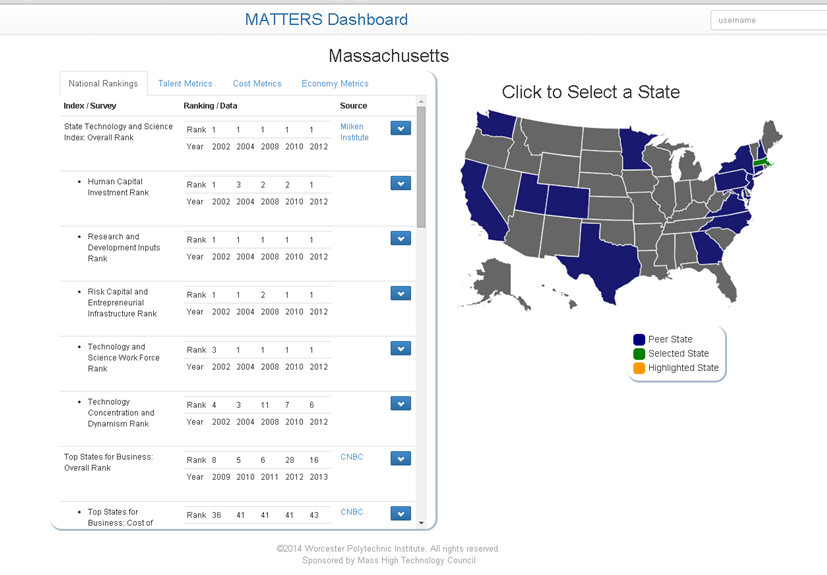

The initial prototype of the MATTERS system was developed in Spring 2014:
Over the Summer a robust software redesign was completed. The prototype was developed into a stable system.
Development continued with a user interface redesign. For the front end the site was converted to use bootstrap for responsive design allowing for use of the site on mobile devices. More ways of viewing the data were developed through the use of multiple table views, D3 charts to display data over time and across states, and improvements were made to the heatmap of the United States. Students worked with an expert in User Interface Design from MITRE corporation, as well as designers from Mesh Design Agency.
Concurrently, an MQP team developed an Administration Center for the management of new data sources. Students worked with an expert software engineer from MITRE corporation. Mitre also performed a comprehensive evaluation of the security and performance of the system.
Version 1.0 of MATTERS was launched in February 2015.
Over the summer a user study was performed by Bentley University to evaluate the usability of the site. In response to this feedback, students made a series of improvements to the site. Navigation and ease of use were addressed.